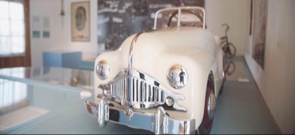

Real Chubut - Agencia de Noticias


Chubut celebra a puertas abiertas el Día Internacional de los Museos

Se podrán disfrutar de los museos provinciales con entrada libre y gratuita.
En el marco de la celebración del Día Internacional de los Museos, que se realiza cada año el 18 de mayo, la Secretaría de Cultura del Chubut se suma a esta conmemoración con la apertura totalmente gratuita a los museos provinciales, oportunidad para que los chubutenses y los visitantes recorran y conozcan parte de nuestra historia.
Los museos que dependen del Gobierno Provincial y que reciben un importante caudal de visitantes durante el año son: “Del Hombre y el Mar”, en Puerto Madryn; del “Soldado de Malvinas”, en Rawson y de “La Familia Perón”, en Camarones.
Como es habitual, el Consejo Internacional de Museos elige cada año un tema para el Día Internacional de los Museos, cuyo objetivo es compartir las preocupaciones de la comunidad museística con la sociedad. Para este año el evento girará en torno al tema: Museos e historias controvertidas: decir lo indecible en los museos.
“Este tema resalta el papel de los museos que, poniéndose al servicio de la sociedad, pueden convertirse en centros de pacificación de las relaciones entre los pueblos. Igualmente, pone de relieve como la aceptación de un pasado doloroso constituye un primer paso para imaginar un futuro común bajo el signo de la reconciliación”.
“Al escoger decir lo indecible en los museos, el tema del DIM 2017 permite aprehender lo incomprensible de los pasados dolorosos inherentes a la humanidad. Este tema invita al museo a posicionarse como actor de la asimilación de las historias traumáticas pasadas gracias a la mediación y a la pluralidad de puntos de vista expresados”, según define el Consejo Internacional de Museos, (ICOM).
MUSEO PROVINCIAL “DEL HOMBRE Y EL MAR”
El Museo se encuentra en la ciudad de Puerto Madryn y funciona en un edificio histórico construido entre los años 1915 y 1917, Patrimonio Cultural de la Provincia. En las tres plantas superiores exhibe una colección que relata la relación del Hombre con el Mar a través del tiempo.
Entre las actividades previstas, con entrada libre y gratuita, se podrá acceder a las visitas guiadas y a las charlas destinadas a las escuelas relacionadas a la muestra “del Hombre y el Mar”.
Los horarios de atención son de lunes a viernes de 10 a 16 horas, y las visitas guiadas son a partir de las 11 horas.
El Museo Provincial “del Hombre y el Mar” se encuentra ubicado en Domeq García y José Menéndez, de Puerto Madryn; y quienes deseen mayor información podrán requerirla al teléfono 0280-4451139 o al mail museopujolmadryn@gmail.com.
MUSEO PROVINCIAL DEL SOLDADO DE MALVINAS
El Museo se encuentra en la ciudad de Rawson, fue inaugurado en el año 2008 durante una de las gestiones del gobernador Mario Das Neevs y en el mismo se desarrolla la experiencia de guerra de los ex combatientes que participaron en el conflicto bélico contra el Reino Unido. La exhibición está conformada por objetos, piezas de vestuario, diarios de época, fotografías, mapas, y cuadros estadísticos, que se organizan en ejes temáticos que atraviesan el conflicto. Todo contribuye a crear un espacio de reflexión para que el visitante rinda un homenaje a los Héroes que lucharon en Malvinas.
El Museo Provincial del “Soldado de Malvinas” está situado en la calle Julio A. Roca 562, de Rawson, y se encuentra abierto al público de lunes a viernes, de 8 a 14 horas, contando con visitas guiadas y la exposición de documentales sobre la temática. El teléfono es 0280-4485262 y el correo electrónico es museosoldadomalvinas@yahoo.com.ar.
MUSEO PROVINCIAL DE LA FAMILIA PERÓN
El Museo se encuentra Camarones y refleja las vivencias del ex presidente Juan Domingo Perón en esa localidad, en las primeras décadas del siglo XX. En 1903, la Familia se afincó en esa zona para que Mario Tomas Perón, padre del líder justicialista, desempeñara allí el cargo de Juez de Paz. En un espacio acondicionado especialmente se exhiben piezas pertenecientes al General Perón y su familia.
El Museo Provincial de “La Familia de Perón” está ubicado en la calle Estrada 467, de Camarones, y se podrá visitar de miércoles a domingo, de 11 a 18 horas. En el mismo se podrán realizar visitas guiadas y disfrutar de la proyección de videos documentales. El teléfono es 0297-4963014 y el correo electrónico museoperon.camarones@gmail.com.
PUBLICIDAD